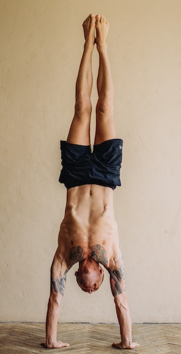
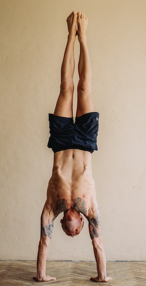

left-right symmetric
https://en.wikipedia.org/wiki/Handstand

source

source: Yoga Journal
| Current pose: handstand, legs straight | Adjacent poses: |
|
Adho Mukha Vrikshasana left-right symmetric https://en.wikipedia.org/wiki/Handstand  source: Yoga Journal |